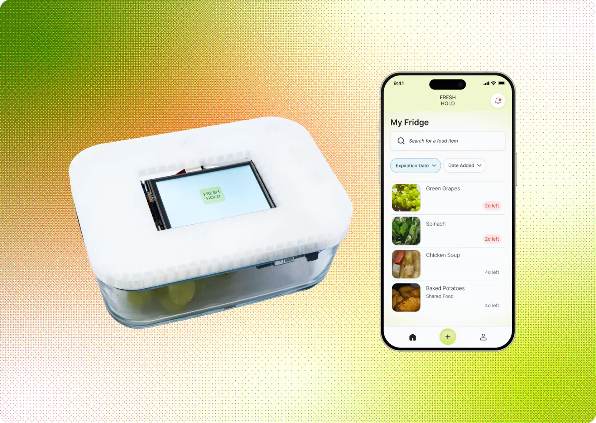

FreshHold:
Managing and keeping food fresh
Introduction
Freshhold tracks your food, so you don't have to. Don't be stressed; we'll keep it fresh!
Freshhold is a smart container system designed to reduce food waste, plan meals efficiently, and help users track groceries in their fridge. Using embedded sensors, Freshhold tracks food freshness, sends timely alerts, and even protects your groceries during power outages.

Our research revealed that managing food at home quietly consumes more time and mental energy than people want to give it. While users aim to reduce waste and simplify cooking, they forget what they have, lose track of expiration dates, and feel too overwhelmed to stay on top of it all. The issue isn't motivation—it's that daily life leaves little room to think about the fridge.
People don't want another chore. They want something that handles the background work and only intervenes when necessary. Freshhold fills that gap: automatically tracking freshness, sending timely alerts, and enabling effortless food decisions. It reduces stress, prevents waste, and makes meal planning manageable.
Key Insights
Survey
We surveyed 70+ young adults about managing food at home.
- 50% of participants plan meals around what is expiring.
- 65% of participants mentioned time and energy as barriers to cooking.
Survey results with young adults showed that the biggest barriers to managing food are decision fatigue and the burden of daily routines.
Reduce decision-making through a solution that informs the user about their food and groceries.
Diary Study
We conducted our diary study with 4 young adults with their own homes. This occurred across 4 consecutive days, and participants responded to prompts on a Google Form at morning and night. Each diary entry covered things such as:
- What and when they ate
- What tools or reminders they used
- Any barriers that got in their way
- 60% of participants often skipped meals or forgot small tasks when tired.
- 65% used tools or reminders in daily food decisions.
Diary entries showed that participants struggled to keep track of what food they had, what was still in good condition, and what actions to take to preserve their food.
Reduce cognitive load through a solution that helps users check on food and take action when necessary.
User Enactment Scenarios
We tested 5 various scenarios with 11 participants to evaluate different automation concepts to help people manage food. We tested these concepts through low-fidelity paper prototypes.

Scenarios
Our user comes back from work and wants to make dinner.

The power goes out and the fridge loses power.

Our user is traveling and out of town.

- People care about the freshness of their food, safety, and food waste.
- For automated solutions, users value: clear, labeled states; simple wording; and at-a-glance status.
- Overall, users appreciate automation that reduces user effort and decision-making.
- When it comes to information overview and away-from-home control, users prefer to use a phone.
A smart container accompanied with a mobile app can best streamline decisions and actions: an LED on the container for at-a-glance prioritization, and a phone interface for a quick overview and away-from-home control.
Final System Concept
After testing several automation concepts, we refined our smart container and companion app to the following key features.
When users put food in their smart container, the container uses an integrated camera to automatically recognize the item and log its purchase date, expiration date, and more. This reduces friction and allows users to effortlessly track their fridge items without manually inputting each one.
The screen on the smart container displays how many days are left until that item expires, allowing users to make an informed plan on which foods to eat. Additionally, users can sort their containers by expiration date in the mobile app, allowing them to prioritize eating older food first.
An LED light on the container glows yellow when the food is going to expire in a few days, and glows red when it has passed its expiration date. When users open their fridge, they can quickly glance and see which food to consume without needing to open the app.
When the power goes out, users can quickly take action through the app. Even if they're away from home, they can freeze their food containers, and the containers will automatically defrost when the power is back on.
Video Demo
Prototype
Key feature 1: Connecting Containers through Bluetooth
- Real-time syncing ensures fresher information without manual input.
- Multiple containers connect simultaneously to build a full "smart inventory" of your fridge.
- Designed for effortless onboarding! Just open the container and it appears in the app.

Key feature 2: Automatic Food Recognition
- A compact internal camera detects newly stored food when the lid closes.
- Computer vision identifies food type and portion size to auto-log items in the app.
- Users no longer need to type, scan, or take photos, the container does the work.
- Users can manually edit the descriptions for additional accuracy and customization.

Key feature 3: Consistent Status Updates
- Automatically recalculates expiration estimates using time + temperature data.
- Sends alerts when temperature becomes unsafe (fridge power outage, door open).
- Auto-updates serving estimates as portions decrease.
- LED indicators and push notifications communicate changes without overwhelming users.

Figma Prototype
Reflection
Our solution earned the honor of "Most Innovative Product!" This was my first time designing beyond a screen for a physical product. Despite the complexity and multiple working parts of our solution, we aimed to design something that integrates into our user's life and simplifies it.
This project really opened so many possibilities for interactions and the broader implications that a product can have. For example, a classmate suggested that the freezing function could be beneficial for users who may not be able to afford a fridge. As a designer, I always aim to consider how design can make a wider impact.
Thanks to Elissa, Mida, and Hannah for being the most creative and driven groupmates!


Thank you for reading! If you have any questions about this project, feel free to email me at bridgit@umich.edu! ✶⋆.˚